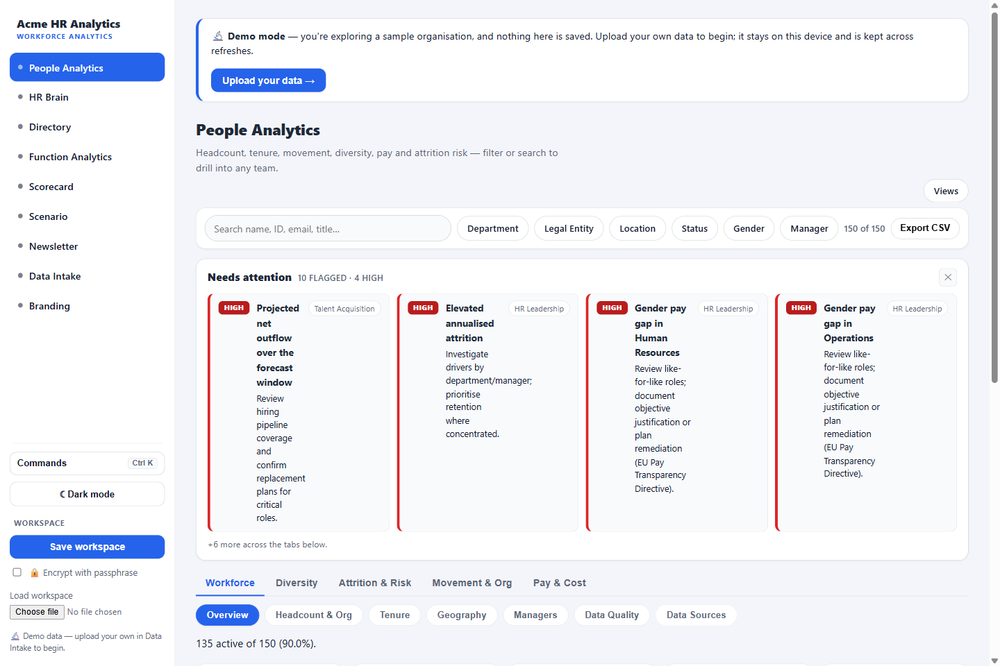
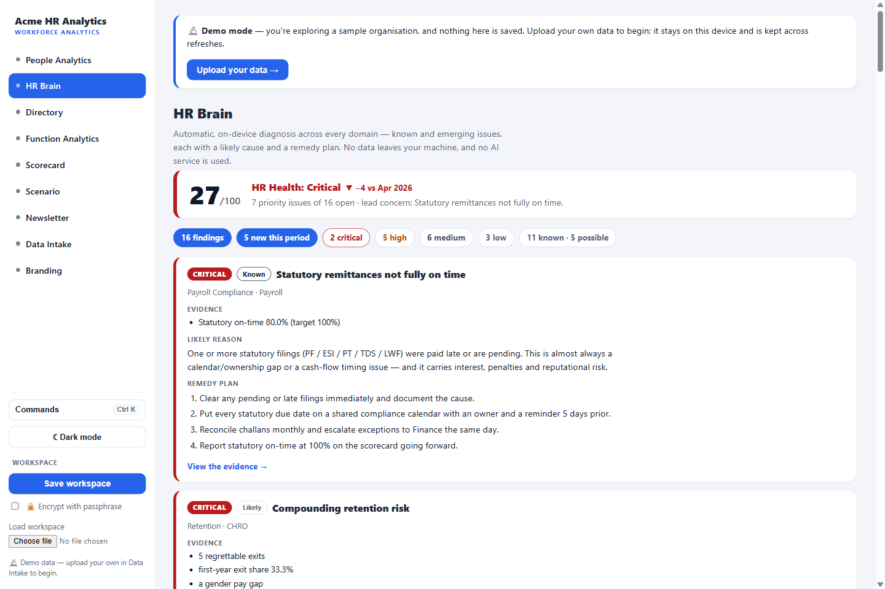
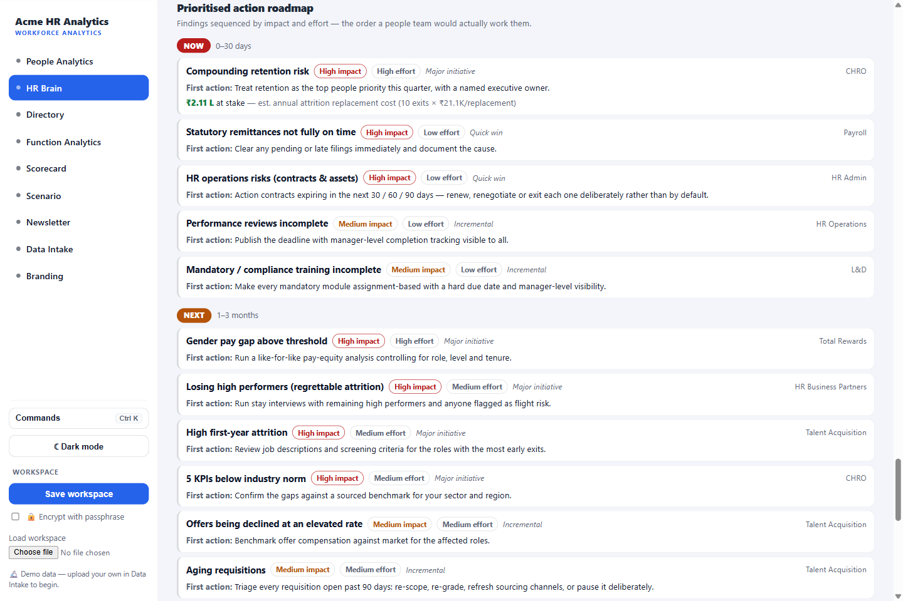
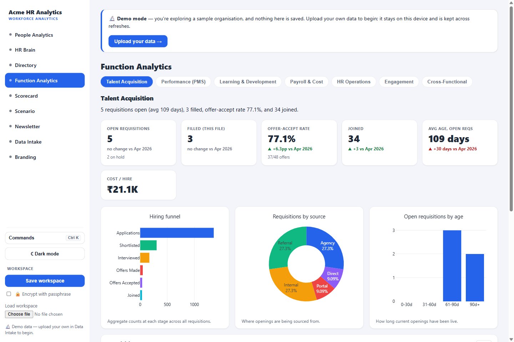
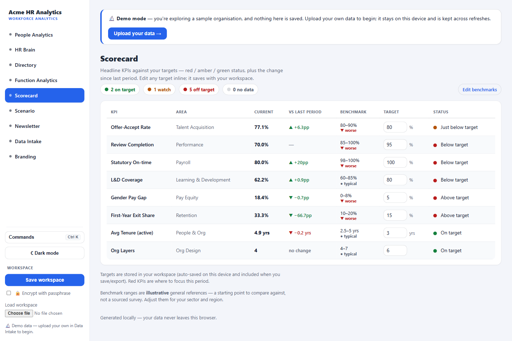
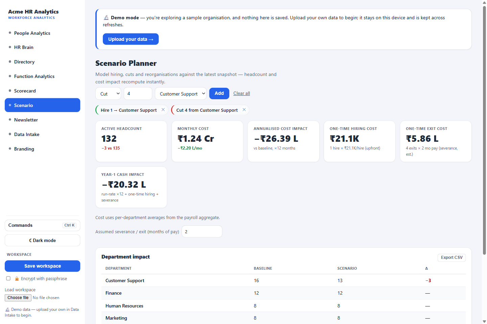
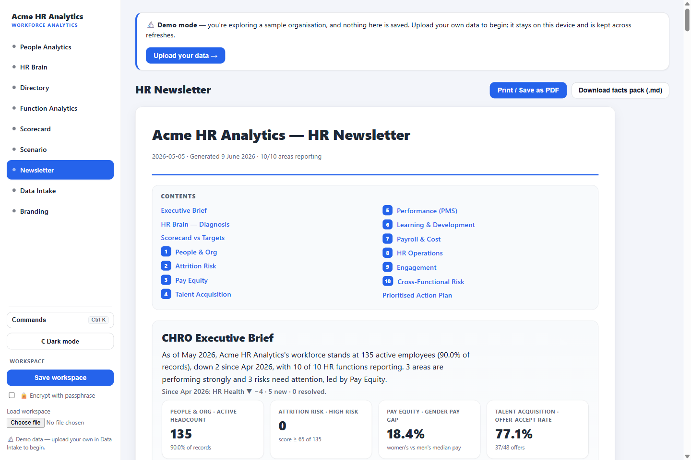
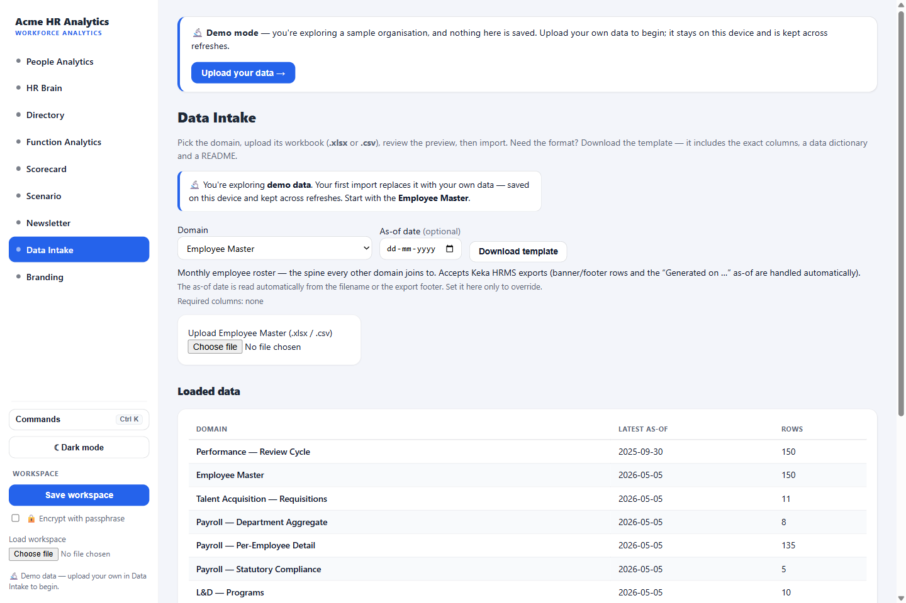

Written for the CHRO and people-leadership team. It explains what the platform is, what it does, how every feature works, and how to roll it out across the function.
The HR Analytics platform turns the workbooks your teams already produce — the Keka employee master, recruitment trackers, payroll registers, the L&D log — into a single, board-ready view of the workforce. It then goes a step further than a dashboard: a built-in HR Brain reads every domain, flags the issues that matter, explains the likely cause, and proposes a remedy plan — all computed on your own device.
People data lives in silos — an HRMS export here, a recruiter's spreadsheet there, payroll in a third system. Pulling it together for a board pack is a manual monthly scramble, and by the time it's assembled it answers "what happened" but rarely "what should we do about it." This platform closes both gaps.
The entire platform is one self-contained file (about 2.8 MB) that opens in any modern browser. There is nothing to install, no database to provision and no network connection required. You can run it from a shared drive, email it to a colleague, or host it behind your own SSO — it behaves identically.
| Concern | How the platform handles it |
|---|---|
| Data residency | All processing is in-browser, on your device. No data is ever transmitted anywhere. |
| Persistence | Your working data is auto-saved locally in the browser. You can also export a single encrypted, compressed workspace file to move between machines. |
| Security | Optional passphrase encryption on the saved workspace. No credentials, no accounts, no telemetry. |
| AI / external services | None. The HR Brain's narrative and recommendations are generated by local, deterministic rules. |
The platform spans the CHRO's direct functions. Each team submits a standardised workbook; the suite ingests each as its own dataset and computes that domain's metrics, then layers cross-functional intelligence on top.
| Domain | Feed | Drives |
|---|---|---|
| Core People | Employee master (e.g. Keka export) | Headcount, org structure, movement, tenure, diversity, attrition |
| Talent Acquisition | Requisition tracker | Funnel, time-to-fill, offer-accept, ageing requisitions, cost/quality of hire |
| Performance (PMS) | Review cycle export | Completion, rating mix, 9-box, PIP load, calibration |
| Payroll & Cost | Payroll register / aggregate + statutory | Cost per head, overtime, variable pay, statutory compliance |
| Learning & Development | Programme + enrolment log | Completion, coverage, mandatory/compliance training, spend |
| HR Operations | Assets, contracts, on/off-boarding | Asset recovery, contract renewals, lifecycle checklists |
| Engagement | Survey export | eNPS, driver scores |
The default view: a complete read of your active workforce, organised into tabs for Workforce, Diversity, Attrition & Risk, Movement & Org, and Pay & Cost. Every chart and table can be filtered (by department, location, level, etc.) and exported.

HR Brain reads every domain at once and produces a CHRO-grade diagnosis: an HR Health score with period-over-period direction, a ranked list of findings (each with evidence, a likely cause and a remedy plan), a prioritised action roadmap, and an HR maturity assessment. It is fully local and deterministic — no AI service is involved.

| Element | What it tells you |
|---|---|
| HR Health score (0–100) | An overall measure that falls as material issues accumulate (a critical issue costs far more than a minor one). The band reads Excellent → Critical. |
| Trend chip (e.g. ▼ −4 vs Apr 2026) | Direction versus the prior period — the single most exec-relevant signal. Computed by re-running the diagnosis on last period's data. |
| Summary chips | Counts by severity and confidence, plus "N new this period" — how many issues newly emerged. |
| Finding cards | Each issue, ranked by severity, with: the evidence that triggered it, a likely reason, a remedy plan, the accountable owner, and a "View the evidence" deep-link to the underlying analytic. |
Each finding is tagged Known (a hard threshold breached), Likely or Possible (inferred or early-warning). Findings that appeared this period carry a blue NEW badge; issues that cleared since last period are celebrated in a "Resolved since last period" line — so the page shows progress, not just problems.
Below the findings, HR Brain sequences the work into a consulting-style roadmap and scores your HR maturity.

Every finding is placed on an impact × effort grid and sorted into three horizons. Quick wins and anything critical go Now; high-impact major initiatives go Next; low-impact or high-effort/low-payoff items go Later. The single highest-priority retention initiative carries an estimated rupee value at stake (annual attrition replacement cost) so the business case is explicit.
Nine capability dimensions — Talent Acquisition, Performance, Reward & Pay Equity, Retention, Engagement, Diversity & Inclusion, Learning & Development, Org Design, and HR Operations & Compliance — are each scored 1–5 (Ad-hoc → Optimised) from your data, with a transparent basis and a "to advance" hint. Dimensions degrade when secondary signals stack (e.g. Performance drops when the PIP load is elevated on top of a completion gap).
A dedicated tab per function — Talent Acquisition, Performance, Learning & Development, Payroll & Cost, HR Operations, Engagement, plus a Cross-Functional view. Each shows that team's KPIs, charts, tables and its own watch-outs.

| Function | Headline metrics & watch-outs |
|---|---|
| Talent Acquisition | Funnel conversion, offer-accept rate, ageing requisitions (>90 days), cost per hire, source mix |
| Performance (PMS) | Review completion, rating distribution, 9-box, promotions recommended, PIP population & outcomes |
| Learning & Development | Completion rate, coverage, mandatory/compliance completion, training hours, spend per learner |
| Payroll & Cost | Cost per head, overtime %, variable %, statutory on-time, payroll errors |
| HR Operations | Assets allocated/lost, contract renewal pipeline, on/off-boarding checklist completion, asset recovery |
| Cross-Functional | Compound risk by department, attrition economics, regrettable attrition |
Functions with no data yet show an "awaiting first upload" placeholder — the suite fills in automatically as each team's feed comes online.
The management-by-objective layer: your headline KPIs as a RAG (red/amber/green) scorecard against targets you set, with period-over-period movement and an industry benchmark band for context.

A what-if sandbox for proposals. Build a plan from hire / cut / move operations and watch the headcount and cost impact recompute instantly — including the upfront one-time costs a board paper needs.

| Output | Meaning |
|---|---|
| Active headcount | Resulting headcount and the change vs baseline, by department. |
| Monthly & annualised cost | The ongoing run-rate change, using real per-department payroll cost (or an assumption you set). |
| One-time hiring cost | Upfront recruitment spend = external hires × cost-per-hire. |
| One-time exit cost | Severance = months of pay × the cost of the roles cut (an editable assumption). |
| Year-1 cash impact | The headline figure: run-rate ×12 plus the one-time costs — for a restructuring it nets the saving against severance, showing the payback. |
Export the whole scenario — operations, summary and per-department impact — to CSV to attach to a proposal.
One click assembles a polished, print-ready monthly newsletter for the CHRO and function heads — the deliverable a consulting firm would charge for, generated from your live data in seconds.

Data Intake is where each team loads its workbook. The platform provides a standard template per domain, reads the as-of date automatically, and validates as it goes.

A searchable, filterable, sortable roster of the full employee population, with saved views and CSV export — the operational lookup that complements the analytical views.
You can be live with real analytics in an afternoon, then switch on each function as its feed becomes available. A suggested sequence:
Onboard one feed at a time, in priority order. Each unlocks its Function Analytics tab and the matching HR Brain rules.
| Week | Feed | Unlocks |
|---|---|---|
| 2 | Talent Acquisition | Funnel, offer-accept, ageing requisitions, cost-of-hire |
| 3 | Performance (PMS) | Completion, 9-box, PIP load, calibration |
| 4 | Payroll + statutory | Cost per head, statutory compliance, scenario cost basis |
| 5 | Learning & Development | Coverage, mandatory-training compliance, spend |
| 6 | HR Operations + Engagement | Contracts, assets, lifecycle; eNPS |
| Feed | Owner | Cadence |
|---|---|---|
| Employee master | HR Operations / HRIS | Monthly (post-close) |
| Recruitment tracker | Talent Acquisition lead | Monthly |
| Performance export | HRBP / PMS owner | Per review cycle |
| Payroll + statutory | Payroll lead | Monthly |
| L&D log | L&D lead | Monthly |
| HR Operations | HR Admin | Monthly |
employee_number) consistent across feeds so cross-functional views line up.| Term | Definition |
|---|---|
| HR Health score | 0–100 overall measure; falls as open issues accumulate, weighted by severity. |
| Finding confidence | Known (threshold breached) · Likely (inferred) · Possible (early warning). |
| Regrettable attrition | Exits of high-rated / high-potential people. |
| eNPS | Employee Net Promoter Score — promoters minus detractors. |
| 9-box | Performance × potential grid used in talent reviews. |
| Value at stake | Estimated annual attrition replacement cost attached to the top retention initiative. |
This guidebook describes the platform running on a sample organisation. All analytics, recommendations and figures shown are generated locally from sample data; your own data and branding replace them on first use. Recommendations are decision support, not automated action — every finding shows the evidence and logic behind it.
— End of guidebook —